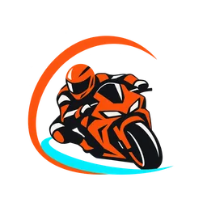
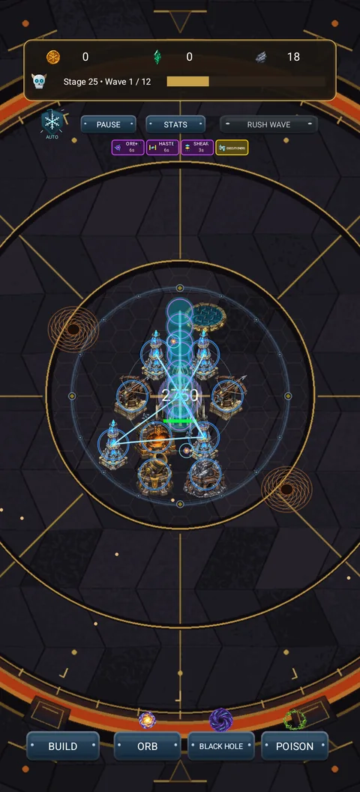

Applied Systems & Mobile Product Engineering
Shipping offline-first apps with Kotlin, Jetpack Compose, Room, and 100Hz IMU sensor fusion alongside Flutter, Riverpod, Drift, Canvas, strict JSON Schema validation, and GitHub Actions CI.
8+ years engineering resilient Linux/cloud platforms, automated Kubernetes infrastructure, and high-signal observability pipelines. I combine deep SRE and backend systems rigor with hands-on product building across Kotlin, Flutter, deterministic NLP, and self-hosted AI workflows.
I am a software and infrastructure engineer focused on backend systems, cloud reliability, and actionable observability. Across roles at Oracle NetSuite and Progress Flowmon, I have built scalable services, custom telemetry exporters, automated infrastructure-as-code pipelines, and SLO-driven alerting platforms using Go, Python, Perl, C, Prometheus, Grafana, and Kubernetes.
Since Sep 2025, I have been on an intentional technical sabbatical dedicated to applied multi-agent AI engineering, independent mobile and desktop product delivery, deterministic language tooling, teaching, and travel.
Shipping offline-first apps with Kotlin, Jetpack Compose, Room, and 100Hz IMU sensor fusion alongside Flutter, Riverpod, Drift, Canvas, strict JSON Schema validation, and GitHub Actions CI.
Orchestrating Antigravity, Codex, Google Jules, and Cursor over custom MCP servers backed by self-hosted Linux/Vulkan inference running llama.cpp and stable-diffusion.cpp.
Building a deterministic PyThaiNLP phonological and syllable engine for Thai–Slovak transcription alongside motorcycle IMU telemetry and a customized off-road Android DVR rig.

Offline-first motorcycle telemetry and cornering analytics app combining 100Hz IMU fusion, lean-angle capture, and local session replay.
Thai learning companion and deterministic Thai–Slovak phonetic transcription engine powered by rule-verified syllable and tone mapping.
Tactical logistics and orbital syndicate management prototype with deterministic simulation ticks, custom Canvas UI, and schema-checked content.

Vertical action-roguelite climbing game featuring rune loadouts, skill builds, staged boss encounters, and responsive touch combat.
Prometheus, PromQL, Alertmanager, Grafana, OpenTelemetry, Thanos, ELK / OpenSearch, Fluent Bit, Nagios, Icinga, Zabbix, SNMP, NetFlow / IPFIX, SLO/SLA Alerting
Go, Python, Bash, Perl, C, Kotlin, Dart, REST APIs, JSON Schema, SQL, Oracle DB, PostgreSQL, SQLite / Room / Drift, Redis
Linux (Oracle Linux, RHEL, Debian), BSD, OCI, OKE / Kubernetes, Helm, Docker, systemd, TCP/IP, VyOS, WireGuard, VMware
Terraform, OpenTofu, SaltStack, Ansible, GitLab CI/CD, GitHub Actions, Jenkins, Bamboo, Git, Gradle
Antigravity, Codex, Google Jules, Cursor, MCP, Local GPU Inference (llama.cpp / Vulkan), Jetpack Compose, Flutter / Riverpod, Playwright E2E
Intentional career sabbatical focused on shipping independent mobile and systems software, self-hosted AI infrastructure, teaching, and family travel.
llama.cpp and stable-diffusion.cpp for local coding, QA, and asset pipelines.Bachelor in Information Technology
Slovak/Czech (native), English (C1), German (A2), Russian (A1), Thai (A1)
I am open to remote-first engineering roles focused on backend systems, SRE, cloud infrastructure, observability, and applied AI tooling.